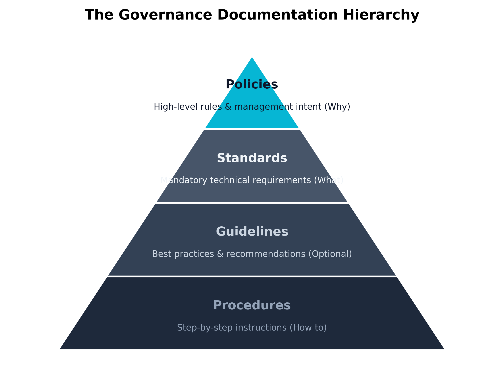
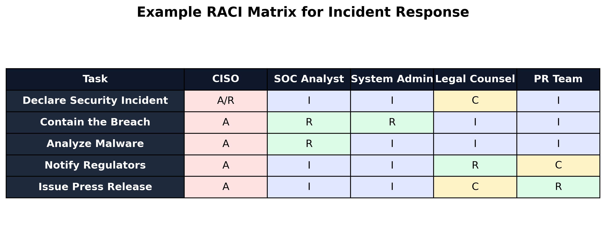

Chapter 1: Security Governance, Compliance, and Ethics
Aligned SecurityX Objectives:
- 1.1: Given a set of organizational security requirements, implement the appropriate governance components.
- 1.3: Explain how compliance affects information security strategies.
Cloze Problem Set: Snow White Builds an Awareness Program
Learning Outcomes:
- Define the components of a comprehensive security program documentation suite.
- Design a security awareness and training program tailored to organizational needs.
- Compare and contrast industry-standard governance frameworks such as COBIT and ITIL.
- Implement data governance strategies across staging and production environments.
- Evaluate the impact of industry-specific compliance standards (Healthcare, Financial, etc.) on security strategies.
- Analyze cross-jurisdictional compliance requirements, including GDPR, CCPA, and data sovereignty.
- Integrate privacy regulations and reporting frameworks into organizational security policies.
- Assess the effectiveness of governance risk and compliance (GRC) tools in automating compliance tracking.
Introduction
Picture the moment a serious breach is announced. Reporters do not lead with the firewall model or the patch level. They ask who knew what, when they knew it, who was supposed to be in charge, and whether the company had a plan. Those are governance questions, not technology questions. By the time the cameras arrive, the technical fight is largely over — the answers that decide the company’s fate were written months or years earlier in policies, ownership matrices, and training programs that nobody outside the security team ever read.
Governance is the framework of rules, roles, and responsibilities that decides how an organization approaches risk. Think of it as the blueprints behind a skyscraper. Before any concrete is poured, architects must understand zoning laws, soil load, and life-safety codes. Skip that step and the building may look impressive for a while, but it will fail an inspection or fail catastrophically — and either outcome ends the project. Deploying firewalls and endpoint tools without a governance framework is the same kind of mistake. You can block traffic without being able to answer the questions that actually matter: Why this rule? Who decided the risk was acceptable? What happens if it fails? Who fixes it?
Cybersecurity, at its core, is a business risk problem dressed up in technology. Governance is what aligns the technology with the strategic, legal, and ethical priorities of the business. It translates the board’s wishes — “keep our customer data safe” — into mandates the IT and security teams can actually execute.
This chapter walks through the foundations of that governance work. We start with the documentation hierarchy — policies, standards, guidelines, procedures — and the RACI ownership model that prevents 3 AM finger-pointing. Next we look at the human element: phishing, social engineering, and the operational-security failures that hand attackers the keys for free. We then compare the major governance frameworks (COBIT, ITIL, NIST CSF, ISO 27000) and finish with the compliance landscape — GDPR, HIPAA, PCI DSS, and the regional rules that decide where your data is allowed to live. A strong security posture does not begin in the server room. It begins in the boardroom.
Why is Governance the Foundation of Security?
Governance is the act of steering the ship. In a corporate setting, it is the system by which an organization is directed and controlled. Applied to information security, it becomes Security Governance — the framework that aligns security strategy with business objectives while managing risk and meeting legal obligations.
Picture an organization without it. The IT team, acting on instinct, mandates 30-character passwords rotated every three days. Mathematically secure, operationally disastrous: nobody can remember the passwords, the helpdesk drowns in resets, and within a week employees are writing them on sticky notes under their keyboards. The control was real; the security was theater. Governance prevents this by forcing security decisions out of the hallway and into a documented process where the cost is weighed against the benefit.
That documentation is not bureaucratic decoration. When an auditor arrives — or when a breach happens — the organization will be judged against what it wrote down. The four document types below form the structure most enterprises use.
Policies, Standards, Procedures, and Guidelines
The rules governing an organization’s security posture sit in a hierarchy. Like a nation’s laws — constitutional principles at the top, municipal codes at the bottom — security documentation flows from broad mandates down to step-by-step instructions. Knowing which document is which matters because each one carries a different level of authority and a different rate of change.

Figure 1.1: The Governance Documentation Hierarchy moving from broad mandates to specific instructions.Key Point The distinction between mandatory and optional documentation is a common exam focus. Policies, Standards, and Procedures are strictly mandatory. Guidelines are highly recommended but inherently optional.
Let us break down each of these components in detail.
1. Policies (The “Why” and “What”) A Policy is a high-level statement of management’s intent and goals. Policies sit at the top of the hierarchy. They do not name brands, products, or configurations — they dictate what the organization requires and why. Because they avoid technical specifics, policies rarely change unless the business model or legal landscape shifts under them.
Policies are mandatory. Violating one is usually a fireable offense. A real policy carries the signature of senior executive management — the CEO or the Board — and that signature is what gives it authority.
Example An “Acceptable Use Policy” (AUP) might state: “Employees must use strong authentication to access company resources, and company systems may not be used to access illicit material.” Notice that it does not specify how strong the authentication must be, only that it is required.
2. Standards (The “Metrics”) Where the policy says something must happen, the Standard defines the measurable requirements for making it happen. Standards bridge policy and procedure. They are mandatory, specific rules that establish a baseline across the organization.
Standards name technologies, configurations, and thresholds. They change as technology evolves. When a new cryptographic vulnerability surfaces, the encryption standard gets revised; the overarching policy requiring encryption stays the same.
Example Supporting the AUP mentioned above, an “Authentication Standard” might state: “All employee passwords must be a minimum of 14 characters in length, include at least one special character, and be rotated every 90 days. Multi-Factor Authentication (MFA) utilizing time-based one-time passwords (TOTP) is required for all external access.”
3. Guidelines (The “Recommendations”) A Guideline is a suggestion for how to accomplish a task or meet a standard. Guidelines are the one document type in this hierarchy that is optional. They help employees navigate situations where strict rules don’t quite fit.
Guidelines hold best practices, tips, and methodologies. Employees are encouraged to follow them, but won’t be disciplined for using an alternative method as long as the mandatory standards and policies are still met.
Example A “Password Creation Guideline” might state: “We recommend using a passphrase—a sequence of four or more random words—rather than a complex string of random characters, as passphrases are easier to remember and mathematically harder for an attacker to crack.” The employee doesn’t have to use a passphrase, but if they do, they will still meet the 14-character standard.
4. Procedures (The “How”) A Procedure is a step-by-step set of instructions for a specific task. Procedures are mandatory: if one exists for a task, the employee follows it exactly. That consistency is what minimizes human error and keeps daily work in sync with the policies above it.
Procedures are tied to specific technologies, versions, and vendor platforms, which is why they are rewritten more often than anything else in the hierarchy. If a company migrates from Microsoft Azure to AWS, the Cloud Security Policy may not change a word — but every provisioning procedure gets rewritten from scratch.
Example A “User Offboarding Procedure” might state:
- Open the Active Directory Users and Computers console.
- Right-click the departing user’s account and select ‘Disable’.
- Move the user account to the ‘Terminated_Users’ Organizational Unit.
- Open the Office 365 Admin Portal and revoke the user’s enterprise license.
- Document completion in the HR offboarding ticketing system.
| Document Type | Purpose | Flexibility | Lifespan / Update Frequency |
|---|---|---|---|
| Policy | High-level management intent. The “Why”. | Mandatory. Non-negotiable. | Long-term. Rarely changes. |
| Standard | Specific, measurable requirements. The “Metrics”. | Mandatory. Must be met. | Medium-term. Updates with tech shifts. |
| Guideline | Best practices and recommendations. | Optional. Highly recommended. | Medium-term. Evolves with industry trends. |
| Procedure | Step-by-step instructions. The “How”. | Mandatory. Follow exactly. | Short-term. Changes with software/versions. |
Warning A common point of failure in enterprise governance is “policy rot.” This occurs when organizations write comprehensive policies to satisfy an auditor but fail to update their granular procedures to match reality. If your written procedure says to use an old tool that was decommissioned three years ago, your governance is broken, and during a crisis, staff will be forced to improvise—often insecurely.
RACI Matrices and Management Commitment
Even a perfect documentation hierarchy fails without clear ownership. Ambiguity is where security programs die. When the alert fires at 3:00 AM and a database is being exfiltrated, there is no time to debate whose job it is to pull the plug. If two people think they are in charge, they issue conflicting commands. If no one thinks they are in charge, the attacker keeps working.
To eliminate this ambiguity, organizations use a responsibility assignment matrix, the most common of which is the RACI matrix. RACI is an acronym that defines the four distinct roles that can be assigned to a specific task or process:
- Responsible (R): The “Doer.” This is the individual or team actually performing the work to complete the task. There must always be at least one ‘R’ for every task, but there can be multiple.
- Accountable (A): The “Owner.” This is the individual who ultimately answers for the success or failure of the task. They hold the veto power and sign off on the work. Crucially, there can be only one ‘A’ for any given task. You cannot share accountability; if two people are accountable, no one is.
- Consulted (C): The “Subject Matter Expert.” These are individuals whose input is required before the task can be completed. This is a two-way communication channel (e.g., asking Legal Counsel for advice before shutting down a server hosting customer data).
- Informed (I): The “Spectator.” These are individuals who need to be kept up-to-date on progress or completion but do not have a say in how the task is executed. This is a one-way communication channel (e.g., emailing the PR team that a server is down).
By mapping out a RACI matrix for critical security processes, an organization forces itself to confront and resolve overlap and gaps in ownership before an incident occurs.

Figure 1.2: An example RACI Matrix defining roles during an active security incident.Thought Question Looking at a RACI matrix, why is it functionally disastrous to assign the ‘Accountable’ (A) role to an entire department (e.g., “The Security Team”) rather than a single, specific individual (e.g., “The CISO”)?
The Reality of Management Commitment
A RACI matrix assigns accountability, but accountability is meaningless without Management Commitment. Often referred to in auditing circles as the “Tone at the Top,” management commitment is the degree to which senior executives (the C-suite and Board of Directors) actively support, fund, and enforce the security governance program.
Security professionals often complain that their users ignore policies. However, user behavior is almost entirely a reflection of management’s true priorities. If the CEO signs a strict acceptable use policy banning the sharing of passwords, but then routinely asks their administrative assistant to log into the CEO’s email using the CEO’s password, the entire policy is rendered null and void in the eyes of the workforce. The “Tone at the Top” has clearly demonstrated that the policy is just a piece of paper, not a cultural mandate.
Furthermore, management commitment is proven primarily through two concrete avenues:
- Budget Allocation: A policy that requires advanced endpoint detection is meaningless if management refuses to authorize the budget to purchase the software and hire the analysts to monitor it.
- Enforcement: If a top-performing salesperson continuously violates security policies by downloading unapproved software, management’s commitment is tested. If the salesperson is disciplined consistently with the rest of the company, the governance holds. If management grants an exception because the salesperson generates high revenue, the security governance framework is fatally compromised.
Governance, therefore, is not a document you write and put on a shelf. It is a living, breathing contract between the security team, the executive board, and the employees. It is the blueprint that ensures when the technology is deployed, it is deployed with purpose, backed by authority, and managed with absolute clarity.
How Do We Build a Culture of Security Awareness?
Even with airtight documentation and a clean RACI matrix, an organization is exposed if its people are not trained to spot trouble. The human element is the most frequently exploited link in any defense — and, with the right training, it can become one of the most effective. The catch is that “training” rarely means the annual slide deck and multiple-choice quiz that nobody finishes. Real awareness changes how people act when something feels off in their daily workflow, not just how they answer test questions.
To build this culture, security leaders must address the primary ways attackers target the human element: social engineering and failures in operational security.
Phishing and Social Engineering
Social Engineering is the psychological manipulation of people into performing actions or revealing confidential information. Rather than exploiting a software vulnerability — which requires technical skill and time — the attacker simply asks the user to open the door. Social engineering trades on familiar human traits: the desire to be helpful, deference to authority, a sense of urgency, or plain curiosity.
The most prevalent form of social engineering is Phishing. Phishing involves sending fraudulent communications that appear to come from a reputable source, typically through email. The goal is to trick the recipient into clicking a malicious link, downloading a malware-infected attachment, or entering their credentials into a fake login page.
While generic phishing attacks cast a wide net hoping someone will bite, attackers often use highly targeted variations:
- Spear Phishing: A highly targeted phishing attack aimed at a specific individual or department. The attacker researches the target (often using LinkedIn or corporate websites) to craft a highly personalized message that references ongoing projects or internal terminology.
- Whaling: A specific type of spear phishing that targets high-profile executives, such as the CEO or Chief Financial Officer (CFO). These attacks are often designed to authorize massive wire transfers or grant access to the organization’s most sensitive intellectual property.
- Vishing (Voice Phishing): Social engineering conducted over the telephone. Attackers may spoof their caller ID to look like the internal IT helpdesk and convince the user to read them their password or multi-factor authentication (MFA) token.
- Smishing (SMS Phishing): Social engineering conducted via text message. These often exploit urgency, such as a fake message from the CEO claiming they are stuck in a meeting and urgently need the employee to purchase gift cards.
Example A spear-phishing email targeting an HR representative might look like this:
“Hi Susan, I’ve attached my updated resume for the Senior Network Engineer position. I noticed the portal was down, so I’m sending it directly. Thanks, John”
The attached file,
John_Resume.pdf.exe, is actually a malware payload disguised as a PDF. Because receiving resumes is part of Susan’s normal workflow, she is highly likely to open it.
To defend against these attacks, organizations must implement continuous, interactive training. This includes running simulated phishing campaigns where fake (but safe) phishing emails are sent to employees to test their awareness. When an employee fails the test, they receive immediate, bite-sized training explaining what red flags they missed, such as hovering over links to check the true destination URL.
A critical component of this training is establishing clear Communication and Reporting channels. Employees must know exactly how to report a suspicious email (e.g., clicking a “Report Phishing” button in their email client) rather than just deleting it or, worse, forwarding it to a colleague.
Operational Security (OPSEC)
While phishing is active manipulation, Operational Security (OPSEC) failures are passive leaks. OPSEC began as a military discipline aimed at keeping adversaries from piecing together a sensitive operation from public scraps. The corporate version is the same idea: protect the small, individually harmless pieces of information that combine into something dangerous.
Poor OPSEC hands attackers the exact details they need to write a convincing spear-phishing email. Knowing who reports to whom, what software the company runs, and when the IT lead is on vacation is often enough to walk past every technical defense.
Common OPSEC failures include:
- Social Media Oversharing: Employees posting photos of their work badges online, allowing an attacker to easily clone the barcode or replicate the badge design to bypass physical security.
- Whiteboards in Video Calls: Taking a Zoom call or posting a photo with a whiteboard in the background that outlines the network architecture or lists temporary administrator passwords.
- Public Conversations: Discussing sensitive upcoming mergers, unpatched vulnerabilities, or executive travel plans while sitting in a crowded coffee shop or riding in an elevator.
Warning LinkedIn is an absolute goldmine for attackers. When an IT administrator updates their LinkedIn profile to boast about successfully migrating the company’s servers to “Windows Server 2012 R2,” they have inadvertently informed every attacker in the world exactly which operating system (and which corresponding vulnerabilities) the company is running.
Building OPSEC awareness requires training employees to view their daily actions through the eyes of an adversary. It requires teaching staff that security is not just about what happens on their computer screen, but what happens in the physical world around them. This heightened state of vigilance is known as Situational Awareness—the ability to identify, process, and comprehend critical elements of information about what is happening in the environment to protect sensitive data from exposure.
Case Study Snow White and the Poisoned Apple (Phishing)
Snow White serves as the Governance, Risk, and Compliance (GRC) Analyst for Seven Dwarfs Mining, a highly profitable gemstone extraction company. Her workforce consists entirely of miners who excel at their physical jobs but possess very little technical literacy.
The company was facing a severe security crisis. A persistent threat actor, posing as the CEO of a trusted vendor named “Evil Queen Logistics,” was bombarding the miners with highly convincing spear-phishing emails containing malicious attachments disguised as invoice PDFs. Because the miners regularly handled logistics invoices, the click rate was alarmingly high, leading to several ransomware scares.
Snow White recognized that a generic, hour-long annual security video was completely ineffective for this demographic. The miners needed actionable, contextual training.
She rebuilt the awareness program around real moments. First came simulated phishing that mirrored the actual Evil Queen Logistics emails. When Dopey clicked the link — and Dopey clicked every time — he wasn’t punished. He landed on a 60-second interactive page that froze on the one detail he had missed: the sender domain read
evilqueen-logistics.coinstead ofevilqueenlogistics.com, an extra hyphen and a swapped TLD. The page made him hover over the link himself before continuing. After three rounds, Dopey started spotting the hyphen on his own.Second came role-based training. Grumpy handled vendor invoices, so Snow White taught him a single rule: any wire change request gets verified by calling the vendor on the number stored in the ERP, never the number in the email. The general miners got a one-click “Report Phishing” button in their email client and a clear promise that reporting a real email — even if it turned out to be legitimate — would never be held against them.
Within a quarter, click rates on Evil Queen lookalikes dropped by more than 80%, and the SOC began receiving dozens of legitimate phishing reports per week from miners who had previously deleted them.
The lesson: awareness sticks when training names the exact thing the user missed and ties the fix to a workflow the user already runs.
Thought Question Why is a punitive approach (e.g., firing or reprimanding an employee) generally considered counterproductive when an employee falls for a simulated phishing test?
Which Governance Frameworks Matter Most?
Civil engineers don’t invent new formulas for the tensile strength of steel — they trust frameworks that have been reviewed, tested, and refined for decades. The same logic applies to security. Building a program from scratch on intuition rarely ends well. Governance frameworks give organizations a structured, repeatable blueprint and — just as importantly — a shared language so the board, the IT department, and external auditors can talk about the same things in the same terms.
Some frameworks are security-specific (NIST CSF, ISO 27000). Others govern the broader IT organization that security depends on. Both matter, because you cannot secure IT processes that are themselves chaotic.
Understanding IT Governance: COBIT vs. ITIL
COBIT and ITIL are often miscast as competitors. They are not. The easy way to remember their relationship: COBIT is the “What.” ITIL is the “How.”
COBIT (Control Objectives for Information and Related Technologies) comes from ISACA and speaks the language of executives, auditors, and IT leaders. Its job is to connect business risk to control needs. It defines the control objectives an organization must meet, then stops. A COBIT objective might read, “The organization must have a mechanism for managing and resolving IT incidents.” How that mechanism actually works is left to the implementer.
ITIL (Information Technology Infrastructure Library) picks up where COBIT stops. Originally developed by the UK government, ITIL is the global standard for IT Service Management. It is built for the helpdesk and operations teams. Where COBIT says “have an incident process,” ITIL specifies how to log a ticket, assign severity, escalate from Tier 1 to Tier 2, and run the post-incident review.
Example A hospital uses COBIT to align its IT department with its business goal of maintaining uninterrupted patient care. COBIT dictates a control objective: “System changes must not disrupt critical operations.”
To fulfill this objective, the hospital’s IT department uses ITIL to establish a formal Change Advisory Board (CAB). The ITIL process requires that before any server is patched, a formal change ticket must be submitted, the rollback plan must be reviewed, and the CAB must approve the patch during a weekly meeting.
Used together, the two frameworks turn high-level business goals into reliable day-to-day operations.
Several security-specific and reporting frameworks layer on top of (or alongside) the IT governance frameworks above:
- ISO/IEC 27000 Series: The international standard for establishing and maintaining an Information Security Management System (ISMS). Heavily used by global enterprises and frequently required in B2B contracts.
- NIST Cybersecurity Framework (CSF): A voluntary US framework organized around five functions — Identify, Protect, Detect, Respond, Recover — that has become a de facto common language for describing program maturity.
- SOC 2: A reporting framework cloud and SaaS providers use to prove to customers that they handle data responsibly. SOC 2 reports are the artifact most enterprise procurement teams ask for before buying a cloud service.
| Framework | Primary Focus | Best Used For | The “What” or the “How”? |
|---|---|---|---|
| COBIT | Business Alignment & Audit | Connecting IT goals to enterprise goals. Establishing control objectives. | The What (and the Why). |
| ITIL | IT Service Management (ITSM) | Standardizing IT operations, helpdesk procedures, and lifecycle management. | The How. |
| TOGAF | Enterprise Architecture | Designing, planning, and implementing enterprise IT architecture. | The Design. |
| ISO/IEC 38500 | Corporate Governance of IT | Providing guiding principles for directors on the acceptable use of IT. | The Principles. |
Data Governance in Staging and Production
Frameworks govern processes; organizations must also govern their most valuable asset — data. Data Governance is the management of data’s availability, usability, integrity, and security across the enterprise.
At its core is Data Life Cycle Management: how data is handled from Creation, through Storage and Usage, into Archival, and finally to secure Destruction. Lifecycle discipline matters legally during e-discovery — the process of locating digital evidence for civil or criminal proceedings. An organization that retains old emails longer than necessary discovers, often painfully, that anything still on the servers can be subpoenaed.
One of the most critical aspects of data governance is managing how data flows between different operational environments. In modern software development, there are typically three primary environments:
- Development (Dev): Where software engineers write and initially test raw code.
- Staging (or Test/QA): An environment that perfectly mirrors the live system. It is used to test software right before it is released to the public.
- Production (Prod): The live environment that actual customers use. This holds the real, sensitive business data.
A recurring failure in enterprise governance happens when these boundaries break down — most often through the practice of using live Production data in Staging.
Warning Staging and Development environments almost never have the same rigorous security controls, strict access management, or comprehensive logging as the Production environment. If you copy live customer data into Staging, you are exposing sensitive information to a highly vulnerable environment.
Developers ask for live Production data constantly, and they have a real point. Real data is messy, unpredictable, and the only honest way to find some bugs. From a security and governance perspective, though, that messiness is the danger.
When live Production data — real credit card numbers, patient records, plaintext passwords — gets dumped into Staging, several failures stack at once:
- Excessive Access: Developers and QA testers, who typically do not have security clearance for live customer data, suddenly have full access to it in the Staging environment.
- Compliance Violations: Frameworks like PCI DSS explicitly forbid the use of live credit card data in non-production environments. Doing so will result in immediate audit failure and severe fines.
- Targeted Attacks: Attackers know that Staging
servers are often spun up quickly, lack Web Application Firewalls
(WAFs), and use weak default passwords. They will actively hunt for
Staging subdomains (e.g.,
test.company.comorqa-api.company.com) specifically to steal the live data improperly stored there.
Key Point A core tenet of data governance is the strict separation of environments. Production data must never cross the boundary into Staging or Development without undergoing rigorous data sanitization.
To satisfy the developers’ need for realistic testing data while maintaining strict security governance, organizations employ a technique known as Data Masking (or Data Obfuscation).
Data masking involves taking a copy of the Production database and fundamentally altering the sensitive fields before it is moved to Staging. For example, a data masking tool might replace all real customer names with randomly generated names, swap all real credit card numbers with mathematically valid but fake numbers, and scramble social security numbers. The resulting database maintains the exact same structure, size, and relational complexity as the real database—making it perfect for developer testing—but the data itself is entirely fictitious and useless to an attacker.
Alternatively, organizations can use Synthetic Data generation, where artificial intelligence is used to generate a completely new dataset that statistically mirrors the production data without containing a single piece of real user information.
By enforcing strict data governance policies regarding environment separation, security leaders ensure that the organization’s crown jewels remain locked in the vault, rather than being left unattended on a developer’s test bench.
Navigating Compliance and Ethics
Everything so far has been internal — the policies, frameworks, and rules an organization writes for itself. But modern cybersecurity is also shaped by external forces. Governments and industry consortia no longer trust organizations to police themselves on how they handle data. That is the domain of Compliance.
If governance is the steering wheel, compliance is the speed limit enforced by the highway patrol. Governance is internal; compliance is external. It is not optional, and failure brings consequences ranging from large fines to criminal charges to losing the license to operate.
Three terms come up constantly in this space and are easy to confuse:
- Assessment: an internal evaluation by the organization’s own staff to find gaps.
- Audit: a formal, independent review by an external third party to verify compliance.
- Certification: the stamp of approval granted after passing an external audit (e.g., ISO 27001 certification).
Compliance also sits next to ethics. A person’s data — their financial history, medical records, location — is an extension of their identity. Protecting it is not just a regulatory requirement; it is an obligation to the people the data describes.
The compliance landscape can feel like alphabet soup at first — GDPR, HIPAA, PCI DSS, FedRAMP, NERC CIP, CCPA, LGPD, COPPA, DMA. Two stories below anchor the two most consequential families (privacy law and industry-specific standards), and a summary table at the end of the section catalogs the rest.
The Era of Data Privacy: How GDPR Changed the World
For two decades, user data was treated as a commodity that companies could harvest, sell, and trade with little oversight. That era ended in 2018, when the European Union’s General Data Protection Regulation (GDPR) took effect.
GDPR applies to any organization that processes data on EU residents, no matter where the organization is physically based. A small Ohio retailer selling a t-shirt to a customer in Paris is, in that moment, bound by GDPR. The law was designed to shift the balance of power from companies back to individuals, and it did so by codifying four ideas that have since become global norms:
- Explicit consent. Burying a data-collection clause inside a 50-page terms-of-service document doesn’t count. Users must actively opt in.
- The right to be forgotten. EU residents can demand that an organization delete all data held on them. Companies whose databases can’t surgically delete a single user without breaking relational integrity are simply out of compliance.
- 72-hour breach notification. Once a breach is discovered, the regulator must be informed within 72 hours.
- Fines that hurt. Up to €20 million or 4% of global annual revenue, whichever is greater.
GDPR also introduced data sovereignty as a practical operational problem. Data sovereignty is the principle that data is subject to the laws of the country where it is physically stored. EU resident data cannot freely move to servers in countries (the United States, historically) whose surveillance regimes the EU considers incompatible.
The California Consumer Privacy Act (CCPA) followed GDPR’s lead, with a heavier emphasis on the right to know what is collected and to opt out of its sale. Because California’s economy is among the largest in the world, CCPA acts as a de facto national standard for US tech companies. Brazil’s LGPD mirrors GDPR closely, and the US COPPA imposes strict rules on websites aimed at children under 13.
Industry-Specific Standards: HIPAA and PCI DSS
Some compliance regimes don’t care where you’re located — they care what business you’re in.
HIPAA (Health Insurance Portability and Accountability Act) governs the US healthcare sector. It regulates ePHI — electronic Protected Health Information, including medical histories, lab results, and insurance data. HIPAA mandates strict access controls, audit logs that record exactly who viewed which patient record, and encryption both at rest and in transit. The law’s teeth show up in unfortunate but instructive ways: a nurse who leaves an unencrypted laptop in a coffee shop and has it stolen triggers a HIPAA breach event for the hospital, regardless of whether the thief ever guessed the password. The encryption — not the lock screen — is the control HIPAA was looking for.
PCI DSS (Payment Card Industry Data Security Standard) is a different animal. It is not a law. It is a contractual standard that Visa, Mastercard, and the other major card brands impose on any organization that accepts, stores, processes, or transmits credit card data. PCI DSS is unusually prescriptive — it tells you that cardholder data must be isolated on its own segmented network, mandates annual penetration testing, and specifies which cryptographic protocols are acceptable.
Warning Violating PCI DSS won’t send anyone to prison — but the consequence is arguably worse for a retailer. The card brands can simply revoke the merchant’s ability to process cards. For an e-commerce business, losing Visa and Mastercard is the end of the company.
The Rest of the Landscape
Beyond GDPR-style privacy law and HIPAA/PCI-style industry standards, several other regimes show up in CAS-005 and in real practice. The table summarizes them rather than walking through each in narrative form.
| Regime | Type | Applies To | Core Requirement |
|---|---|---|---|
| GDPR | Privacy law (EU) | Anyone processing EU resident data | Explicit consent, right to erasure, 72-hr breach notification |
| CCPA | Privacy law (California) | Businesses serving CA consumers | Right to know, right to opt out of sale |
| LGPD | Privacy law (Brazil) | Anyone processing Brazilian resident data | GDPR-style protections |
| COPPA | Privacy law (US) | Sites/services aimed at children under 13 | Parental consent, strict data-handling rules |
| HIPAA | Industry (US healthcare) | Covered entities, business associates | ePHI safeguards, access logs, encryption |
| PCI DSS | Industry (card payments) | Anyone touching cardholder data | Network segmentation, scanning, controlled storage |
| FISMA / FedRAMP | Government (US) | Federal agencies and contractors | Control catalogs, continuous monitoring, authorization-to-operate |
| NERC CIP | Critical infrastructure (utilities) | North American bulk electric system | Asset identification, segmentation, recovery planning |
| DMA | Market regulation (EU) | Large digital “gatekeeper” platforms | Interoperability, user choice, data-sharing limits |
| ISO 27000 series | Voluntary international standard | Any organization | ISMS framework, audited certification |
| NIST CSF | Voluntary US framework | Any organization | Identify / Protect / Detect / Respond / Recover |
| SOC 2 | Reporting framework | Service providers (especially cloud/SaaS) | Trust-services criteria, attested by auditor |
| CIS Benchmarks / Controls | Configuration baselines | Any organization | Hardened settings, prioritized safeguards |
| CSA CCM | Cloud controls matrix | Cloud customers and providers | Cloud-specific control mapping |
Case Study The Meta GDPR Fine (2023)
To understand the sheer power of modern compliance laws, we must look at the historic penalty levied against Meta (the parent company of Facebook and Instagram) in May 2023.
For years, Meta had been transferring the personal data of its European users to its massive data centers located in the United States. This was originally legal under an international data transfer agreement known as “Privacy Shield.” However, European courts invalidated Privacy Shield because they ruled that U.S. intelligence agencies had too much surveillance reach, meaning EU citizens’ data was not adequately protected from government snooping once it landed on American soil.
Despite the invalidation of the agreement, Meta continued to transfer the data, arguing that it used standard contractual clauses to protect the information. The Irish Data Protection Commission (DPC), acting on behalf of the EU under the GDPR, disagreed.
The DPC ruled that Meta’s cross-border data transfers violated the GDPR’s strict rules on data sovereignty. The penalty was staggering: a record-breaking €1.2 billion ($1.3 billion) fine, the largest ever issued under the GDPR. Furthermore, Meta was ordered to completely suspend the transfer of EU user data to the United States and delete the data that had been unlawfully transferred.
The case reset the global technology landscape. It proved that compliance is not just a checklist — it is a geopolitical issue. It demonstrated that no company, regardless of size or influence, is beyond GDPR’s reach. And it made clear that an organization does not need to be hacked to face catastrophic consequences. A purely administrative failure in data governance is enough.
The lesson: “we used standard contractual clauses” is not a defense when the regulator has decided the destination jurisdiction is incompatible with the law. Where data physically lives is itself a control.
Thought Question Given the complexities of Data Sovereignty highlighted by the Meta case, how might a global cloud provider (like Amazon Web Services or Microsoft Azure) need to physically structure their data centers to attract European customers?
Chapter 1 Review
Key Terms
- Policy: A high-level, mandatory document endorsed by senior management that outlines the organization’s overarching security intent and goals (The “Why” and “What”).
- Standard: A mandatory document that defines the specific, measurable, and technical requirements needed to comply with a policy (The “Metrics”).
- Guideline: An optional document providing recommendations and best practices for achieving a standard.
- Procedure: A mandatory, step-by-step set of granular instructions for completing a specific task (The “How”).
- RACI Matrix: A table used to define the Responsible, Accountable, Consulted, and Informed roles for a specific project or incident to eliminate ambiguity in ownership.
- Phishing: A form of social engineering where an attacker uses fraudulent communications (typically email) to manipulate a victim into revealing sensitive information or deploying malware.
- Spear Phishing: A highly targeted phishing attack aimed at a specific individual or department, utilizing prior research to craft a personalized message.
- Whaling: A specific type of spear phishing that targets high-profile executives, such as the CEO or CFO.
- Vishing / Smishing: Social engineering conducted over the telephone (Voice) or via text message (SMS).
- Operational Security (OPSEC): The process of protecting seemingly innocuous, unclassified data that an attacker could piece together to uncover sensitive operational details.
- COBIT: An IT governance framework designed for executives that focuses on aligning IT goals with overarching business goals (The “What”).
- ITIL: An IT service management framework that provides granular processes for running an IT department, such as helpdesk ticketing and change management (The “How”).
- Data Masking: The process of taking a copy of a Production database and altering sensitive fields (e.g., scrambling names) before moving it to a Staging environment for testing.
- Synthetic Data: Artificially generated datasets that statistically mirror production data without containing any real user information.
- GDPR (General Data Protection Regulation): A strict EU privacy law granting citizens extensive rights over their data, including explicit consent and the right to erasure, backed by massive financial penalties.
- CCPA (California Consumer Privacy Act): A strict California privacy law granting consumers the right to know what data is collected and the explicit right to “opt-out” of its sale.
- HIPAA: A US law strictly regulating the protection, encryption, and audited access of Electronic Protected Health Information (ePHI) in the healthcare sector.
- PCI DSS: A contractual standard enforced by credit card brands requiring strict security controls (like network segmentation) for any organization handling credit card data.
- Data Sovereignty: The legal principle that digital data is subject to the laws and regulations of the country in which it is physically stored.
Review Questions
True / False
- A security policy is a high-level statement of management intent that rarely dictates specific technologies.
- In a RACI matrix, the ‘Accountable’ role should be assigned to an entire department to ensure collective responsibility.
- Standards are mandatory, measurable requirements that support the goals of a policy.
- COBIT is an IT governance framework primarily used by helpdesk technicians to determine the step-by-step procedures for incident management.
- Guidelines are mandatory instructions that employees must follow precisely as written to maintain compliance.
- An organization governed by PCI DSS must segment credit card data onto its own network VLAN.
- Exposing live production data within a staging environment for testing purposes is a failure of data governance.
- The GDPR relies primarily on “opt-out” consent — organizations can collect EU citizen data as long as they provide a link to stop collection later.
- Operational Security (OPSEC) failures include employees posting photos of their work badges on social media.
- A procedure is the most frequently updated document in the governance hierarchy because it is tied to specific technologies and software versions.
Scenario / Multiple Choice
- A new CISO inherits a 200-page security policy that names specific firewall vendors and lists exact password lengths. What is the most accurate critique?
- A. The policy is too short to cover the enterprise.
- B. Vendor names and length values belong in standards, not policy — the document is conflating two tiers of the hierarchy.
- C. Policies should always name specific vendors so audits can verify compliance.
- D. Password length should never appear in any document.
- A retailer experiences a data breach affecting 50,000 EU customers. Discovery happens on a Friday at 2:00 PM. By when must the relevant supervisory authority be notified under GDPR?
- A. Within 24 hours of the breach occurring.
- B. Within 72 hours of discovery.
- C. Within 30 days of completing the investigation.
- D. No notification is required if no payment data was lost.
- A developer asks for a copy of the production customer database to test a new feature in staging. Which response best aligns with data governance?
- A. Approve the request; staging mirrors production by design.
- B. Deny the request; developers should never see real data under any circumstance.
- C. Provide a masked or synthetic copy so the schema is realistic but the records are not real PII.
- D. Grant read-only access in production directly so no data is moved.
- During an incident, two managers begin issuing conflicting commands about whether to isolate a compromised server. Which governance artifact most directly prevents this?
- A. The Acceptable Use Policy.
- B. The annual security-awareness training deck.
- C. A RACI matrix that names a single individual as Accountable for the isolation decision.
- D. The corporate code of ethics.
- A small e-commerce company processes credit cards but is not regulated by HIPAA or GDPR. Which statement most accurately describes its PCI DSS exposure?
- A. PCI DSS does not apply because it is not a government law.
- B. PCI DSS applies because it is contractual; non-compliance can result in losing the ability to process cards.
- C. PCI DSS applies only if annual revenue exceeds $10 million.
- D. PCI DSS applies only to physical stores, not online retailers.
Answer Key
- True: Policies dictate “what” and “why,” not “how.”
- False: The ‘Accountable’ role must be a single individual. Shared accountability is no accountability.
- True: Standards provide the metrics that satisfy a policy’s goals.
- False: COBIT is for executives and high-level alignment. ITIL is the framework used by helpdesk and operations teams.
- False: Guidelines are optional. Procedures are mandatory.
- True: PCI DSS requires segmenting cardholder data away from general traffic.
- True: Production data must not cross into less secure environments without sanitization.
- False: GDPR requires explicit opt-in consent.
- True: Badge photos leak the design and barcode an attacker would need to clone.
- True: Procedures change with the software they document.
- B. Naming firewall vendors and password lengths inside the policy itself blurs the line between policy and standard. The policy should require encryption and authentication; the standard should specify the lengths and the vendors.
- B. GDPR sets a 72-hour clock starting from the moment the organization becomes aware of the breach.
- C. Data masking and synthetic data give developers realistic test data without exposing real PII. Production data in staging is the failure mode the chapter warned about.
- C. A RACI matrix’s single Accountable owner is exactly the artifact designed to prevent two-managers-arguing scenarios.
- B. PCI DSS is contractual rather than statutory, but the card brands can — and do — revoke the merchant’s ability to process cards, which is functionally fatal for an online retailer.